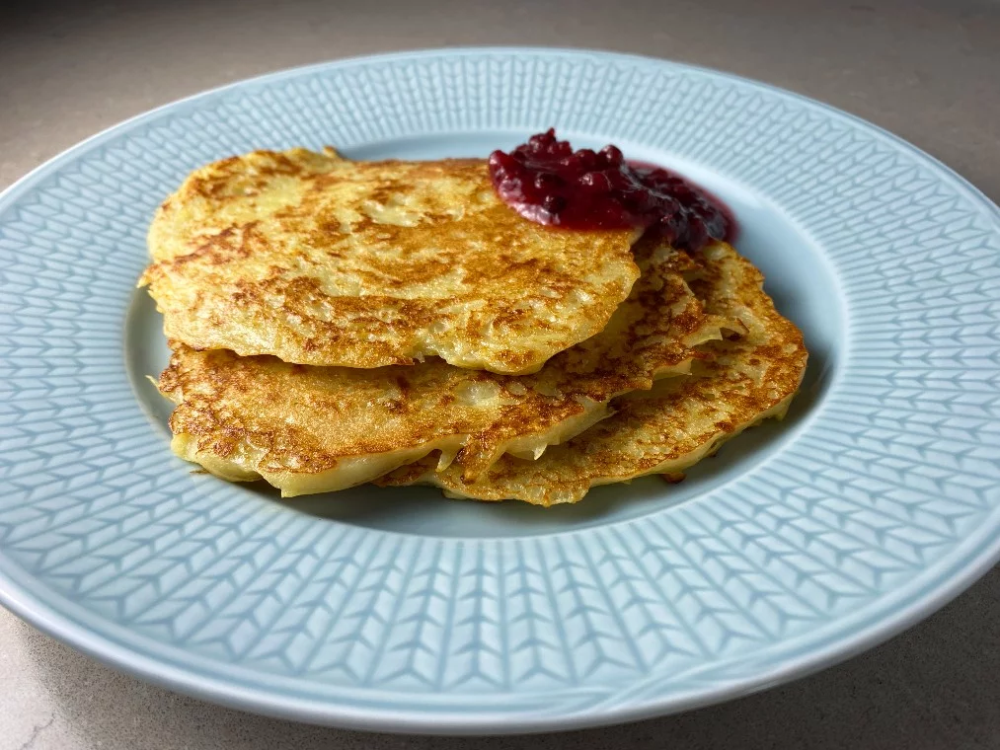

Raggmunk

En favorit gjord på rivna potatisar, mjöl ägg och mjölk
Ingredienser:
Mjöl
Mjölk
Ägg
Potatis
Salt
Skala och riv potatisen
Blanda i mjöl, mjölk, salt och ägg
Stek i stekpanna
Servera med lingonsylt och eventuellt stekt fläsk eller bacon